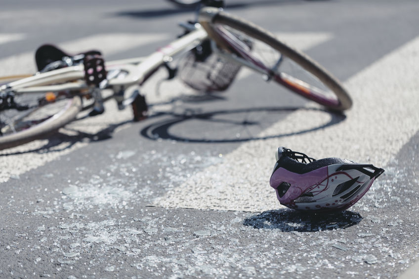

Explore safety insights across states using our interactive maps that showcase information on protected bike lanes and bicyclist fatalities. The color legends provide a visual representation of the status of protected separated bike lanes and the number of bicyclist fatalities in each state.
Discover the impact of road speed on cycling safety according to Federal Highway Administration guidelines, which advise protected bike lanes or shared use paths for speeds of 30 miles per hour or more. Data is from the 2021 Bicycle Friendly State survey and specifically indicates responses regarding the presence of protected bike lanes on state roadways.
Explore the varied landscape of cyclist safety across states from 2017 to 2021, with bicyclist fatality rates ranging from 0.2 in South Dakota to a concerning 151.2 in Florida. These figures, however, overlook factors like population differences and biking frequency, offering a nuanced perspective on the issue. For detailed information on fatalities and injuries, visit Fatality and Injury Reporting System Tool (FIRST) of the NHTSA (National Highway Traffic Safety Administration).
